Spiritual Vanguard
The Order of Light is composed of fervent believers, convinced that they are the messengers of God's divine plan. Every city in the Empire hosts a Basilica, while the capital is dominated by the Great Cathedral, the pulsating heart of holiness.
Recruits start as Acolytes, studying scriptures and basic healing. Their path then forks: many become Priests and eventually Bishops to guide communities, while those who master the eradication of the profane become Exorcists and Abolishers.
Some choose a life of meditation in monasteries, becoming Seers and Oracles, capable of perceiving the divine design through a mystical connection. Those who transcend mortal limits through total mastery of divine power eventually ascend to the rank of Angel.
Leading the Order on the battlefield are the Chaplains, Officers who combine clerical devotion with martial prowess, wielding hammers to deliver judgment.

Active Roster
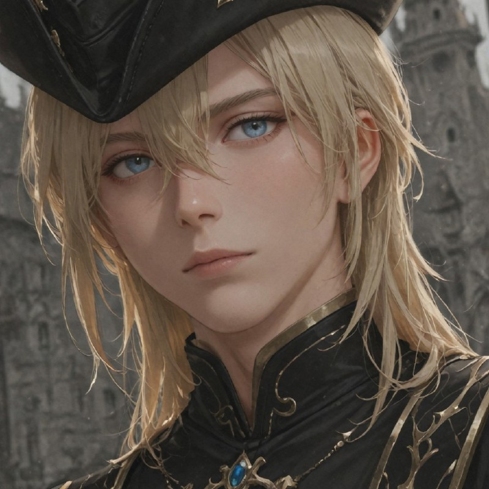
Chaplain
Envoys of the Ruler and proficient fighters. They smite heathens with hammers while sustaining allies with their holy presence.
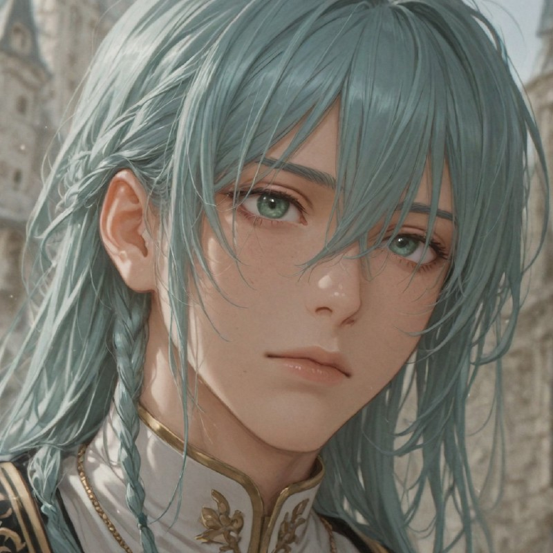
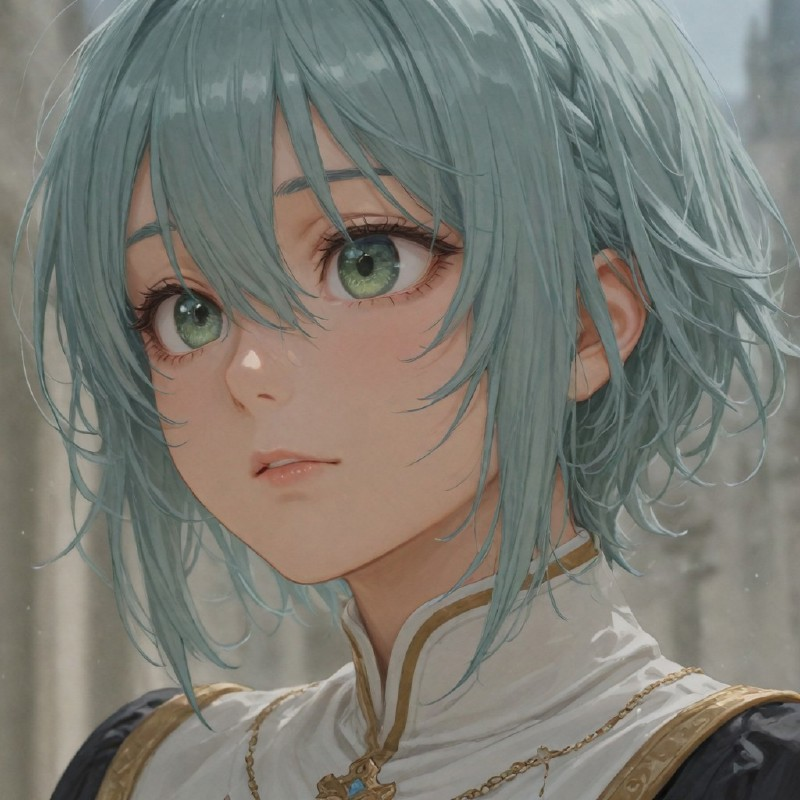
Acolyte
Initiates who join the Order to learn the fundamentals of God’s teachings and basic restorative arts.
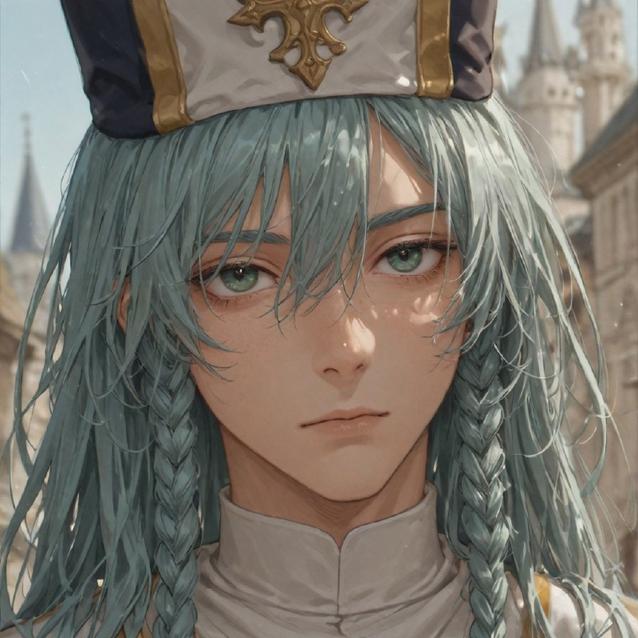
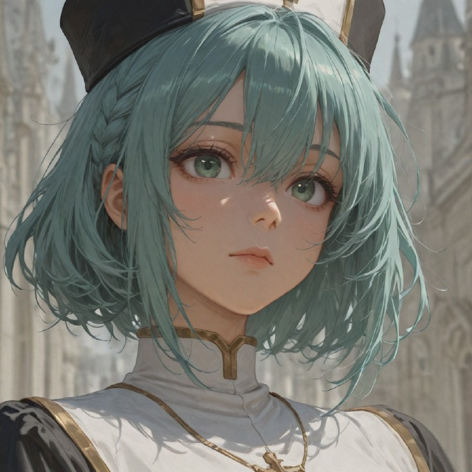
Priest
Experienced initiates focused on clerical duties and advanced healing techniques to support the wounded.
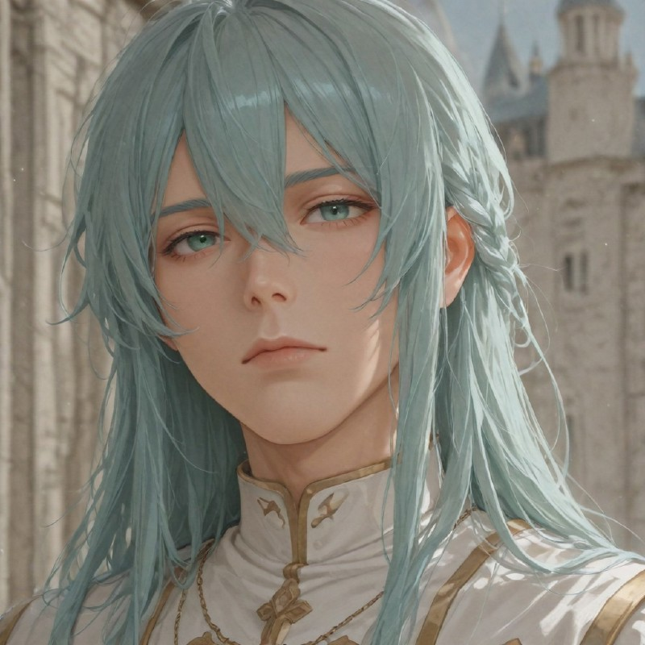
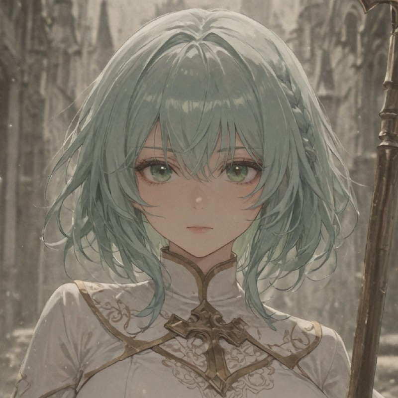
Seer
Meditative recruits who study the future to answer God's call, utilizing divine precognition on the battlefield.
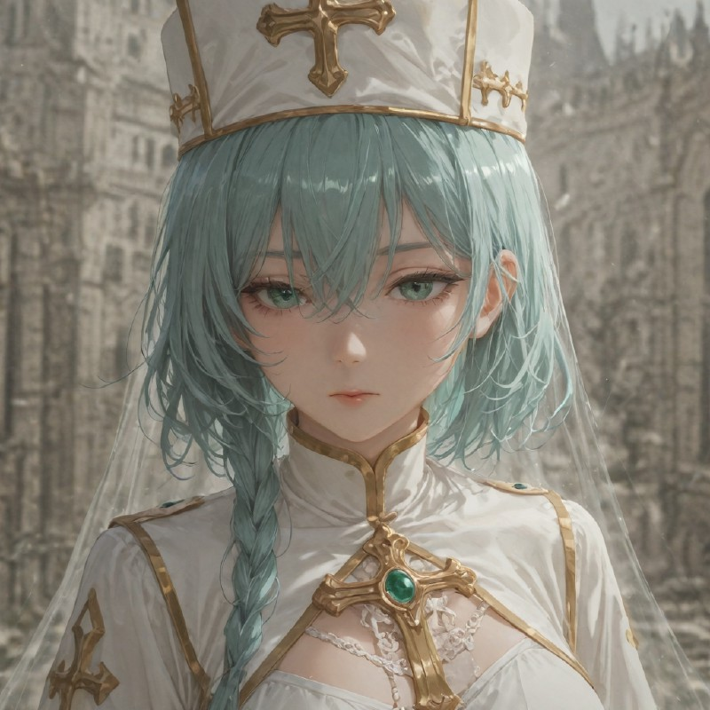
Bishop
Spiritual leaders who master "Healing Echoes", allowing their prayers to bounce between multiple allies.
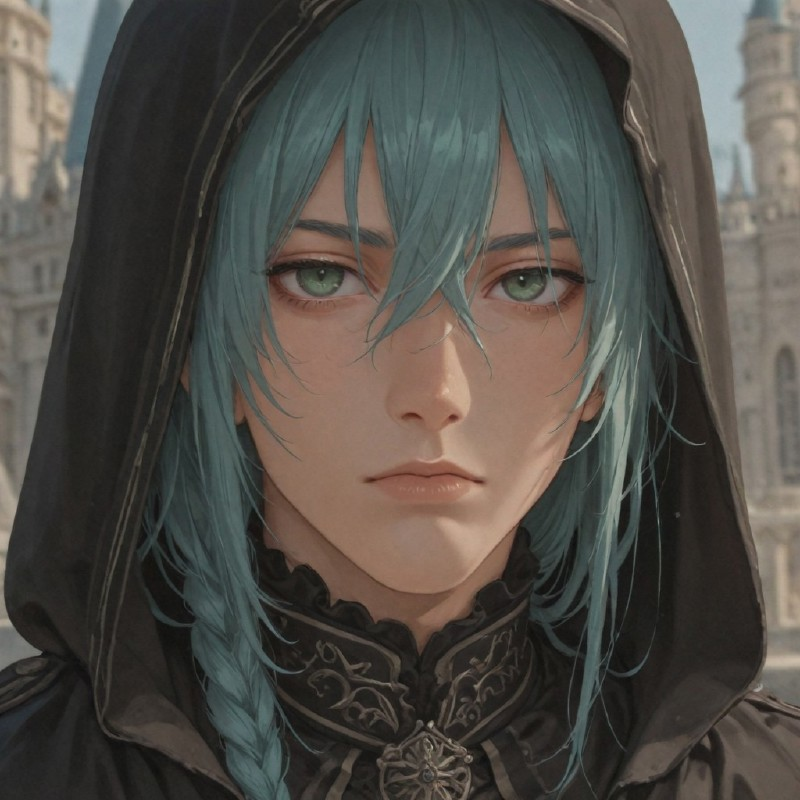
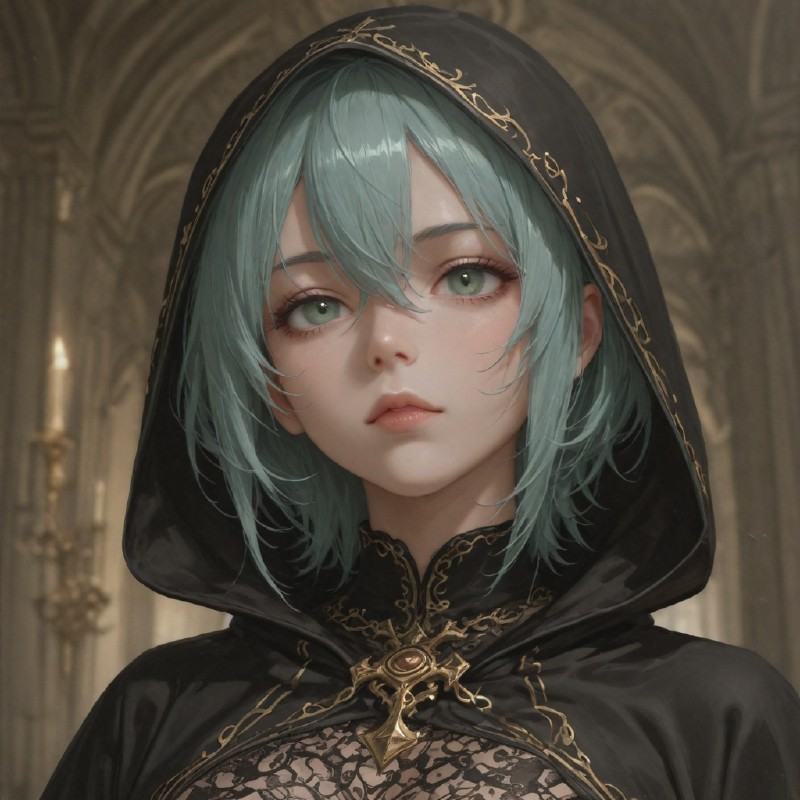
Exorcist
Combat clerics specialized in eradicating Devils, Demons, and Undead through the absolute power of Light.
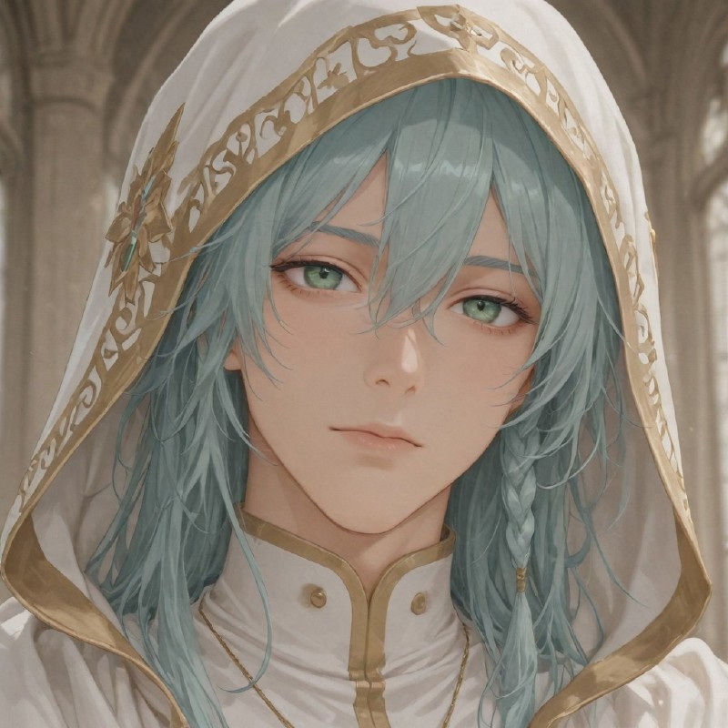
Oracle
Mystics with high precognition. They can dodge and immediately counter melee attacks with divine reckoning.
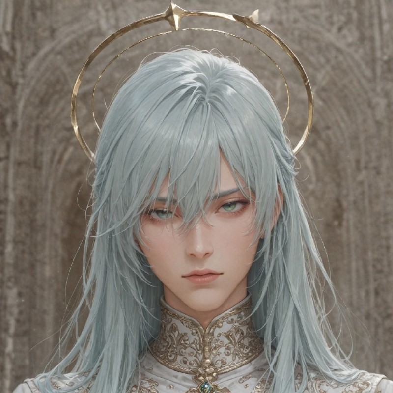
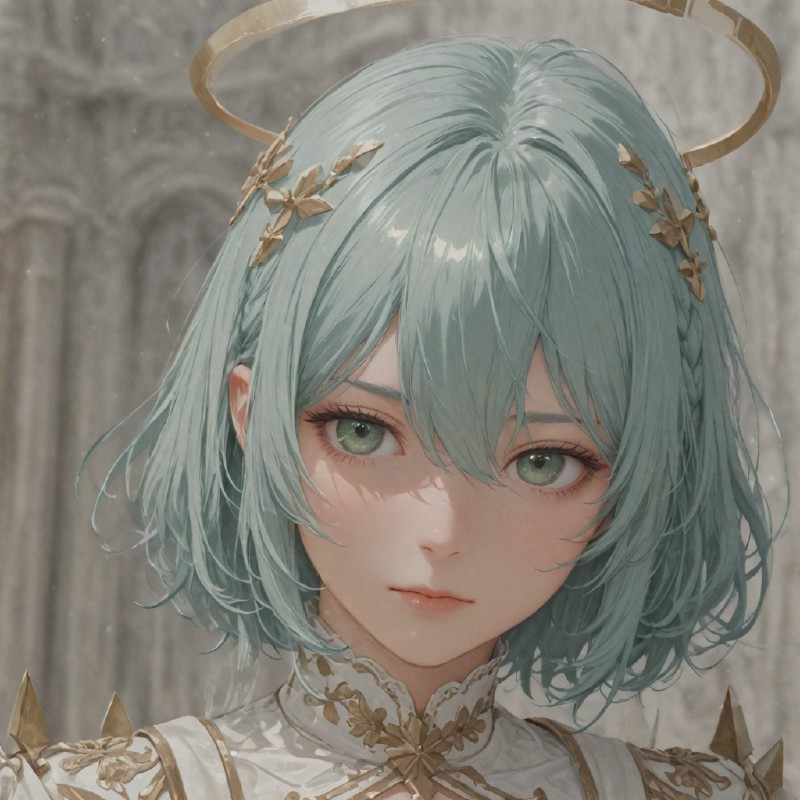
Primarch
Beacons of hope who create sanctuaries of light, automatically healing and purifying allies in critical condition.
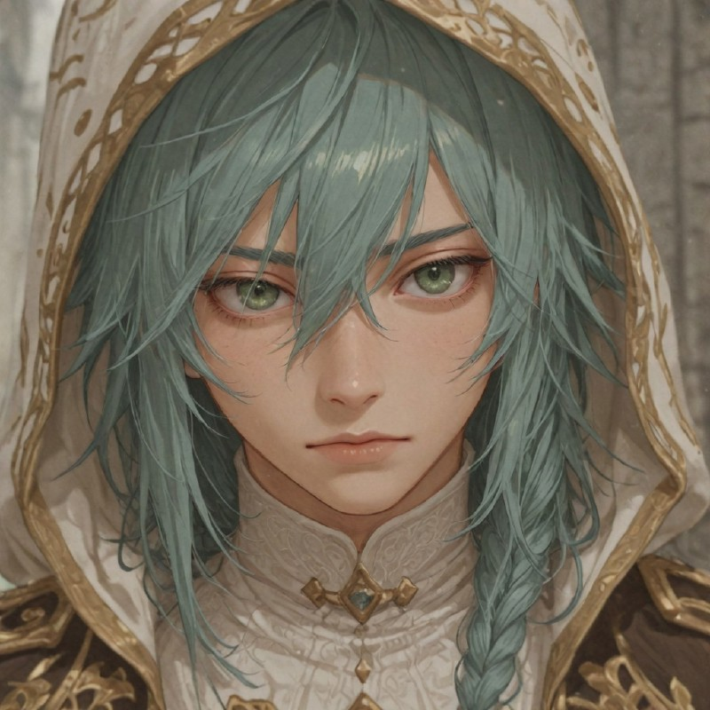
Abolisher
The bane of evil entities. Their absolute light scorches, blinds, and burns unholy creatures from a long range.
Herald
Emissaries with divine traits. They unleash rays of light in a line and counter melee strikes with devastating speed.
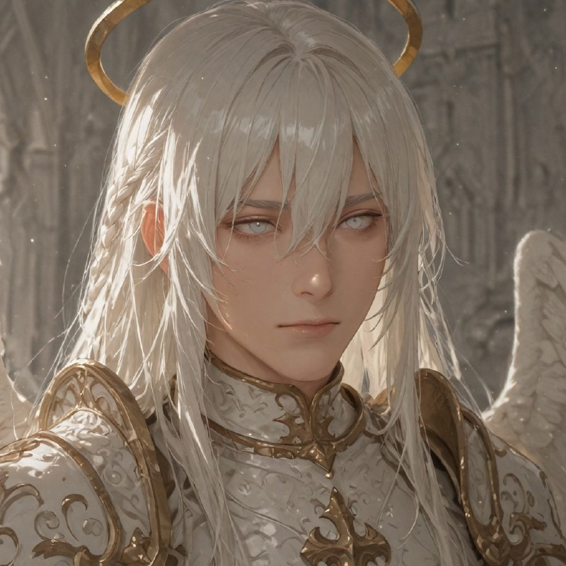
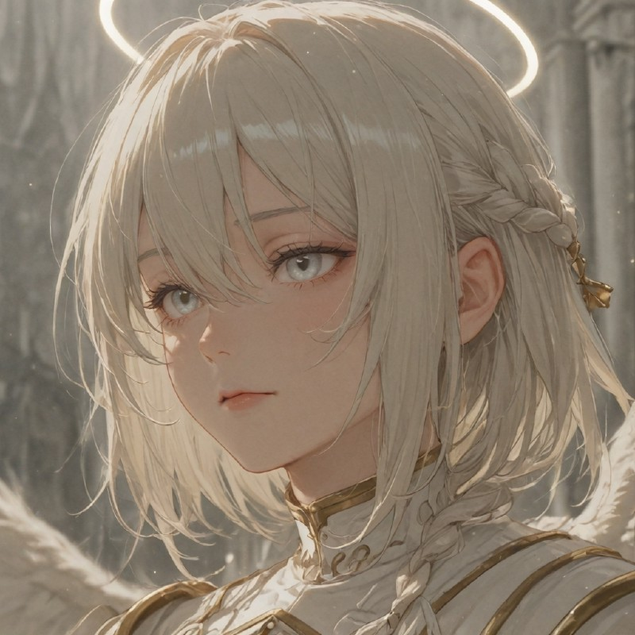
Angel
Divine beings that work miracles. They can resurrect fallen allies and cleanse the world with spears of pure light.